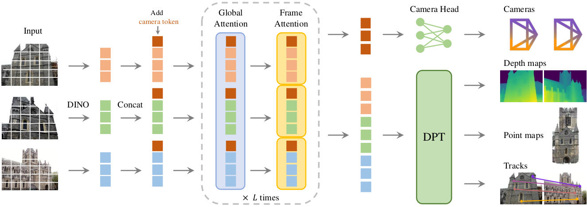

Overview
01 · The Problem and the Main Claim
VGGT 从多张 RGB 一次前向预测相机、深度、point map 与点轨迹；主干交替使用帧内和全局注意力。论文主张，多任务几何预测不必始终依赖昂贵的后优化。它是理解后续流式改造的基础，但本身不是固定历史状态的在线系统。
理解问题时先区分两件事：图像里某处像什么，与它在三维世界哪里。前者主要依赖视觉特征，后者还需要解释观察方向、相机运动、遮挡和多视角之间的对应关系。一个多视图主干的价值，就是允许不同视角互相提供几何证据。
读完本篇应能回答：网络如何让多张图交流？多个输出有什么关系？为什么同样的架构面对不断增长的视频会遇到新的困难？
Geometry Basics
02 · Four Outputs, One Geometric Structure
内参描述像素与相机射线的关系，例如焦距；外参描述相机与世界坐标之间的关系。深度图给像素对应表面的深度。若这些量都可靠，可以用投影几何把每个像素还原到三维。
point map 直接在像素网格上存三维坐标。track 则回答某个查询位置在另一张图中出现在哪里，以及是否可见。对应关系、几何与相机必须相互兼容：若两张图中同一表面的三维预测完全对不上，多视图解释就出现矛盾。
下面公式采用 world-to-camera 外参约定。ũ 是齐次像素坐标，K 为内参，D 为沿相机 z 轴的深度。先反投影到相机系，再用逆外参变换到世界系。若另一实现采用 camera-to-world，公式形式应随之变化。不能复制一个公式而忽略坐标约定。
X_camera = D(u,v) K⁻¹ ũ 若 X_camera = R X_world + t， 则 X_world = Rᵀ(X_camera − t)
| Output | Interpretation | Validation |
|---|---|---|
| 相机参数 | 从哪里看、怎样投影 | 检查重投影是否一致 |
| 深度图 | 每个像素的表面深度 | 检查边界与尺度 |
| Point map | 每个像素的三维点 | 检查跨视图能否拼接 |
| 点轨迹 | 同一查询位置在不同图中的对应 | 检查遮挡与跟踪漂移 |
Architecture
03 · Figure 2: Local Features and Cross-View Interaction

Jianyuan Wang et al., 2025 · Original figure reproduced for scholarly commentary; copyright belongs to the authors · Paper & Caption ↗
从左到右看：不同颜色代表不同图像的 token；camera token 被拼接进去；中间重复 Global Attention 和 Frame Attention；右侧相机头读取聚合特征，密集头恢复深度、点图等输出。图上的 DPT 可以先理解成把较低分辨率特征恢复成逐像素预测的解码结构。
为什么交替？只做帧内注意力，各图之间无法交换证据；只依赖全局混合，网络还要在很大的 token 集合里同时完成单图结构组织与跨图对应。交替机制提供了两种不同的交流范围。具体相对收益应由消融判断，不能从结构直觉直接断言。
可用三个视角理解：某个表面在第一张图被遮挡，在第二张图清楚可见，在第三张图只出现边缘。全局层允许这些证据相互作用，帧内层再组织每张图自己的空间布局。这是多视图证据融合的一般解释，不是强制网络逐点执行手工匹配。
Implementation
04 · Understanding the Implementation Through Tensor Shapes
官方 aggregator 将输入组织为批量 B、视图数 S、通道、H、W。每张图编码成 P 个 token、每个维度 C。帧内阶段把 B×S 当作批次，注意力在每张图的 P 个位置内计算；全局阶段则让同一场景的 S×P 个位置共同交互。
这两次重排没有凭空增加观测，只改变哪些 token 可以直接交换信息。因而检查一个所谓“流式 VGGT”时，可以首先看全局阶段的张量和 attention mask：它是否允许当前帧接触未来帧？是否每次重新计算所有过去 token？
camera token 也不是手写的相机参数。它是可学习的信息汇聚位置，最后需要相机头把隐向量映射为可解释输出。它与图像 token 一起参与注意力，所以相机估计可以利用跨视角线索。
帧内： [B·S, P, C] 跨帧： [B, S·P, C]
Training
05 · Why Multitask Training Can Help Geometry
直观上，单独监督一个输出可能留下很多可行但不一致的解。加入相机与对应关系约束，相当于从不同角度要求同一组特征解释同一场景。它们可以互补，但也可能在噪声标签或尺度不一致时相互冲突。
例如一张深度图看起来平滑，却可能把同一表面在两帧中放到不同位置。跨视图对应与相机约束能暴露这种错误。反过来，只有相机运动大致正确，也不代表薄结构或边界深度正确，所以仍需要密集监督。
不能把这种互补简单概括成“任务越多越好”。如果新增任务可以完全绕开共享特征，或目标与几何冲突，未必有收益。正确做法是固定训练资源，对比移除某个目标后的具体任务误差。
Experimental Evidence
06 · Experiments: What Does the Speed Comparison Measure?
原文 Table 1 在每个场景随机取 10 帧、单张 H100 下评估。Re10K 的 AUC@30：VGGT 前向为 85.3、约 0.2 秒；加 BA 后为 93.5、约 1.8 秒。两行是不同推理配置，不应混用精度和速度。
AUC@30 概括相机误差在阈值范围内的分布，越高越好。BA 是对相机与空间结构进行后续优化的过程。这里更恰当的解读是：前向预测已提供很强的初始化与直接结果，而优化仍可能进一步提高精度。
这也解释了组会上常见的误读：不能拿“带 BA 的最高准确率”配“纯前向的最低延迟”，然后称为同一个模型的工作点。速度还必须与帧数、图像分辨率和硬件一起报告。
对后续研究，先复现同一协议下的几何质量，再讨论流式吞吐。只把离线总运行时间除以帧数，不等于每帧到达后的在线响应延迟。
Memory Analysis
07 · Why This Is Not Yet Long-Term Online Memory
全局注意力允许所有输入视图相互影响。加入一个新视图后，旧视图的中间特征原则上也会改变；若想得到与完整离线处理相同的结果，就不能简单冻结旧特征、只算新帧。
从注意力基础公式看，S 张图各有 P 个 token，总共 SP 个。完整 token-pair 交互量随 (SP)² 增长。高效 kernel 可以减少显存读写或中间矩阵的存储，却不会凭空消除所有跨 token 计算，也不会自动让可用历史固定。
于是后续方法出现两个分支：CUT3R 把历史压入固定状态；StreamVGGT 限制未来访问并缓存过去 KV；LingBot-Map 再进一步区分哪些历史需要密集保存。这些改变的是时间组织与状态设计，不只是把相同模型分多次调用。
Discussion
08 · Contributions and Practical Boundaries
这篇适合作为整组论文的共同基础：相机、深度和点图是互相关联的几何输出；帧内与全局注意力是组织视觉证据的两种范围。后续讨论 streaming，核心就是“哪些过去的信息仍能参与计算，以及以什么形式参与”。
实际使用时，先检查预处理、坐标方向、深度定义和输出单位；再看点云质量。一个漂亮点云截图不足以判断相机参数、深度尺度和跨帧一致性都正确。
本篇未尝试训练或复现，论文中的速度与成绩是作者报告。本文的复杂度推导和例子用于解释机制，不是新的 benchmark 结论。
Discussion
Questions for Discussion
Why predict cameras and depth alongside point maps?
这些输出支持不同下游接口，也能相互检查几何一致性；并不是所有应用都直接使用同一种点云输出。
Does encoding each image once make the model streaming?
只缓存图像编码仍不足够。全局交互层的历史特征是否会随新帧改变，才是需要解决的问题。
Does FlashAttention make full history free?
不能。它优化注意力实现，历史状态数量和跨 token 交互规模仍然需要独立管理。
Is point tracking equivalent to persistent instance segmentation?
不同。点位置对应、物体类别和跨时间实例身份是不同输出，需要不同评测。
References
仅选取与正文讨论直接相关的作者原图，保持原图内容并注明出处；点击图片可查看大图。原文事实、基础解释、个人分析分别标记。本笔记未运行训练或复现实验。
Verified on October 12, 2026. Paper claims refer to the linked versions; code references reflect the official repositories on this date.